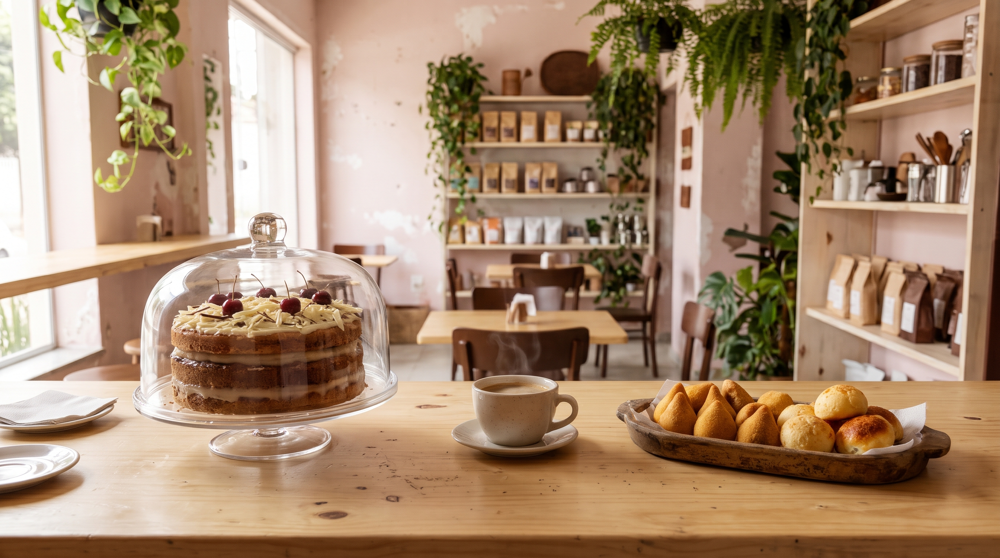
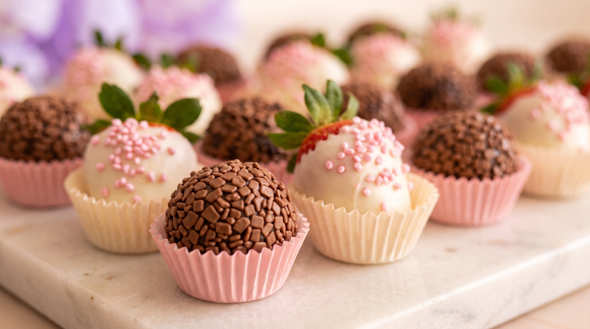

Maria Malu doces e salgados
doces e salgados
Confeitaria no Revoredo, em Tubarão/SC, com espaço café e pronta entrega. Faz salgados e docinhos para festas, bolos, sobremesas no pote, lanches e encomendas.
4,9
de nota no Google, em 49 avaliações.
Tem gente elogiando o pastel de pizza, o misto quente, o bolo de pote e o atendimento.
Ler o que dizemDocinhos
Brigadeiro gourmet, brigadeiro de colher, morango coberto de chocolate branco com granulado rosa. Pra festa ou pra adoçar o café.
Ver o cardápioO que sai da cozinha
Escolha a linha e pergunte no WhatsApp o que tem pronto. Cada nome abaixo abre a conversa.


Salgados e docinhos para festas.
Salgados, docinhos, bolos e naked cake sob encomenda, em caixas e potes com a marca da Maria Malu.
manda a data primeiro- O que você quer: salgados, docinhos, bolo
- A data da festa
- Para quantas pessoas
Avaliações no Google
Quem já provou, conta.
Tudo novinho e feito na hora.
O melhor, sem dúvidas, é o pastel de pizza!
Não lembro ter comido um misto quente tão delicioso...
Os bolos de pote são viciantes.
Os salgadinhos desse local são maravilhosos, bem recheados e sequinhos.
Tenho que passar todo dia para comer um docinho.
Espaço café & pronta entrega
Passe para tomar um café, comer um misto quente ou levar o doce do dia. Fica na Av. Expedicionário José Pedro Coelho, 2770, no Revoredo.
1 mini caseirinho vulcão, 1 água da Serra Latinha e 15 salgadinhos. Quantidade limitada!
Promoção divulgada no Instagram. Confirme no WhatsApp se segue valendo.
Horários
Quando abre
Confira os horários abaixo.
- Segunda a sexta
- 08:00 – 18:30
- Sábado
- 08:00 – 16:30
- Domingo
- Fechado
Perguntou o horário? A resposta já vai.
Mande um "oi" e receba na hora os horários, o endereço e o link para pedir no Anota AI, mesmo fora do expediente.